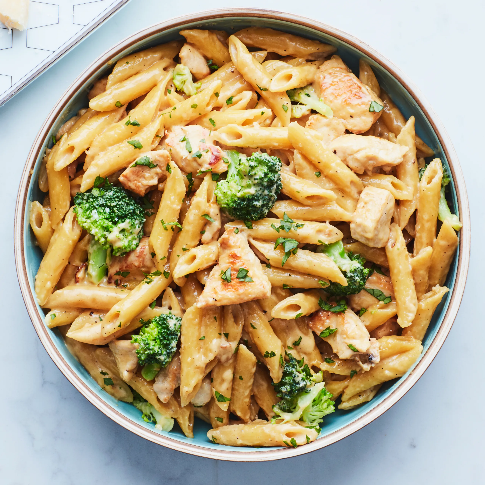

See Your Faviorate Breakfast/dinner/lunch recipe here
This website show you different kinds of recipe which you can cook and eat. This website is absolutly free to use and any one can use this website for cooking
This website is specially made for those womans or mans who can't diside what to make. This website helps them to make something really tasty.
chicken and broccoli penne pastaRecipes
.jpg)
Maalpua
Eat a healthy wealthy nashta called maalpua.This breakfast can become one of your faviorate breakfast because Its taste is so good as well as its smell.It can make your day perfect because its taste. Click on the view button to take that taste.
Cooking time:- In morning(7:00AM - 11:00AM)
Difficulty Level:- Medium
.jpg)
Guliapaa
Eat a healthy wealthy nashta called Guliapaa.This breakfast can become one of your faviorate breakfast because Its taste is so good as well as it is crispy.It can make your day perfect because of its crispeeness. Click on the view button to take that taste of this crispy breakfast.
Cooking time:- In morning(7:00AM - 11:00AM)
Difficulty Level:- Medium
.jpg)
Belgian waffles
Eat a tasty breakfast called Belgian waffles.This breakfast is very sweet and tasty as it is seems. Its taste is so good as well as it is crispy.It can make your movement perfect because of its crispeeness and sweetness. Click on the view button to take that taste of this sweet breakfast.
Cooking time:- In morning(7:00AM - 11:00AM)
Difficulty Level:- Medium

Channa masala
Eat a healty veg channa masala sabji for your lunch and dinner.Its taste is like spicy and tasty.Make It if you are pursuing to eat something spicy and tasty in your lunch or dinner.Click on view button to see full recipe
Cooking time:-In lunch or dinner
Difficulty Level:- hard

Quick Channa masala
Eat a healty easy to make quick channa masala sabji for your lunch.It is so tasty.Make It if you are looking for eat something sweet and spicy sabji in your lunch.Click on view button to see full recipe
Cooking time:-In lunch
Difficulty Level:- Easy

chicken and broccoli penne pasta
Eat a healty nonveg breakfast.It is so creamy and tasty.Make It if you are looking for eat something nonveg and spicy in your breakfast.Click on view button to see full recipe
Cooking time:-Breakfast
Difficulty Level:- Medium